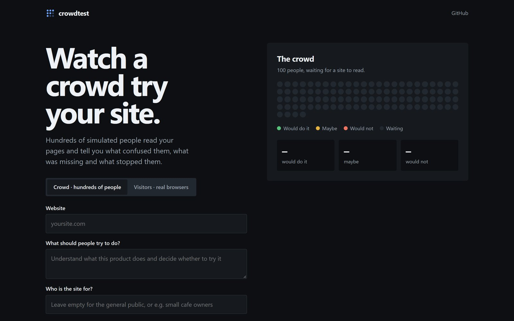
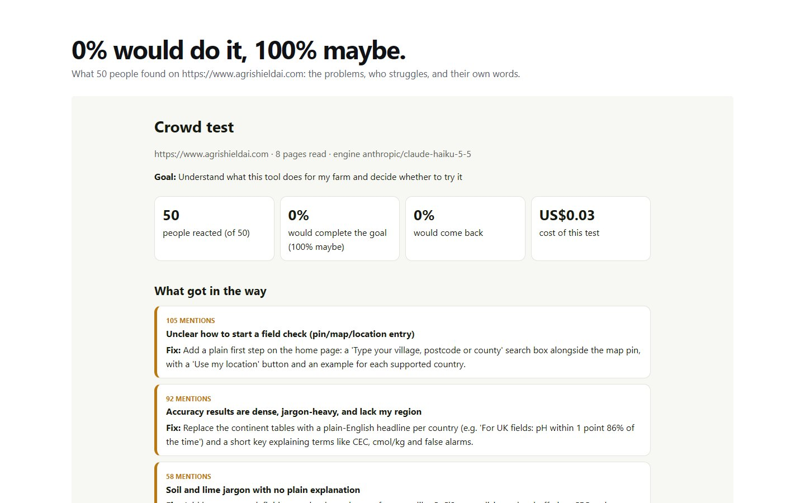

Hundreds of simulated people, each with their own age, job, patience and doubts, read your pages and tell you what confused them, what was missing and what stopped them. Before you spend a cent on ads.

The page: your site, what people should try to do, and who the site is for.
A plain crawler reads your main pages, the way a visitor would.
People generated from mixed traits: age, job, tech comfort, patience, budget, doubts. Or describe your audience, e.g. "small cafe owners".
Would they do what you want? What got in their way? In their own words. The grid fills in live.
Problems grouped and ranked by how many people hit them, each with a suggested fix.
A real run: 50 simulated farmers reading agrishieldai.com. The top problem they raised (unclear how to start a field check) was real, and was fixed on the live site.

Runs on your computer through Ollama with an open model. No account, no key.
With Claude Haiku: one short call per person, cached instructions, grouped results. 100 people cost a few cents.
Visitors mode: AI agents click through your site in a real browser and report where they got stuck.
Honest limits: simulated people lean agreeable and can't replace real users. Use it to find the obvious problems before real people see them, then check with real people.
It runs on your own computer; a hard cost cap stops any run that would go over US$2. Windows PowerShell:
git clone https://github.com/NiharPatel2545/crowdtest cd crowdtest uv venv --python 3.12 .venv uv pip install --python .venv\Scripts\python.exe -e .
# the web page: open http://127.0.0.1:8720 .\.venv\Scripts\python.exe -m crowdtest serve --env-file .env # or a crowd from the command line (free local model by default) .\.venv\Scripts\python.exe -m crowdtest crowd https://yoursite.com --goal "decide whether to try it" --people 100